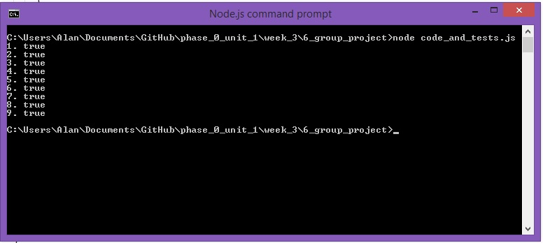

Congratulations, team! All of our tests passed. You can run them yourselves or just look at the screenshot below--it’s really exciting. I’ve taken a quick look at the pseudocode and the code itself. And in addition to working, everything looks very clean and reads very clearly. Nice job.
You can open the tests.js file itself if you like, but I’ll sum up. There were three tests for each of the three functions. The first test was that we used a function; the second tested the function on an array with an odd-numbered length; the third, with an even-numbered length array.